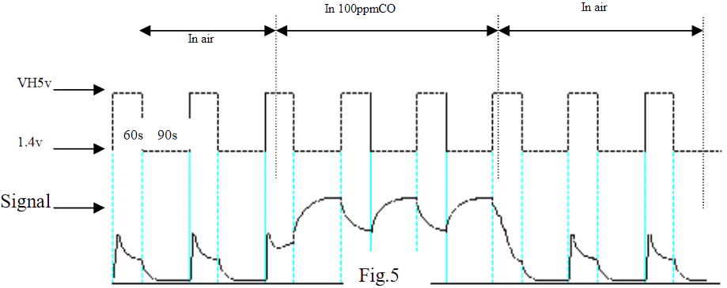

0. The working principle
The MQ-7 sensitive layer is made of \(SnO_2\). In the presence of \(CO\) (the gas concentration we want to measure) the following reaction happens:
\[{SnO_2}_{(s)} + 2CO_{(g)} \rightleftharpoons Sn_{(s)} + {2CO_2}_{(g)}\]
This means that the more \(CO\) in the air, the more \(SnO_2\) gets converted to \(Sn\). I'm not a chemist, but usually the purer a metal is, the lower is its resistivity. In layman's terms: when the concentration of \(CO\) raises, the sensor sensitive layer resistance lowers.
The problem now is: what happens when all the \(SnO_2\) gets converted to \(Sn\)? Notice the double-sided arrow in the previous reaction, because it means it's reversibile.
Chemists defined the so-called
equilibrium constant \(K_c\). When \(K_c>>1\) the reaction equilibrium is shifted to the right side of the equation, meaning that the predominant reaction is the one that gives us the products. The opposite happens if \(K_c<<1\). With this reaction we are in the first case, meaning that:
- \(SnO_2\) is converted (with no effort) to \(Sn\)
- To reverse the reaction, we need to expend energy
That's where another sensor's element comes in handy: the heater. Again, I'm not a chemist, so don't quote me on this, but said forward reaction is exothermic (it releases heat), hence rising the sensor internal temperature means reversing the reaction, converting \(Sn\) back to \(SnO_2\).
This is, in fact, supported by the fifth figure in the
datasheet:

To sum up, we need to:
- Heat the heater at \(5V\)
- Wait \(60s\) to "clean" the sensor
- Drop the heater voltage at \(1.4V\)
- Keep that voltage steady for \(90s\)
- Read the sensor resistance right before the end of the \(90s\)-period
1. The dual voltage problem
The first problem we need to face is the heater dual \(5V-1.4V\) voltage requirement. People decided to solve this issue by:
-
❌ Using the ostrich attitude, continuously providing \(5V\) to the heater.
This is just utterly wrong: they are violating the sensor specs and that's bad.
-
❌ Generate a PWM signal at \(1.4V\) with Arduino.
This is not wrong per se, but you need to be very careful if you choose this option because:
- The heater consumes \(70mA\) at \(5V\) and Arduino can't stand this much current
- The heater needs a steady voltage, so the the PWM signal needs to be filtered
- ✔ Use a custom circuit to switch between the two voltages
1.1. The real solution
We can grab the \(5V\) from the same power supply used for the Arduino, but what about the \(1.4V\) voltage? We can use a voltage divider:
\[5V\frac{R_2}{R_1+R_2}=V_H=1.4V \Longrightarrow \frac{R_1}{R_2}\approx 2.57\]
We know, from the
datasheet, that the heater has a resistance of \(33\Omega\). Hence, if we choose \(R_2=33\Omega\):
\[R_1=2.57\cdot33\Omega\approx 85\Omega\]
Which can be approximated to the closest standard value of \(82\Omega\). We also need \(V_H=5V\)! The solution is to simply short-circuit \(R_1\) with a transistor. We can use an nMOS since it has a much smaller \(R_{DS}\) than a BJT.
Now everything is fine, but we might want to switch the MOSFET on and off both from a \(5V\) board and a \(3.3V\) one. We need a BJT, obtaining the circuit in the figure.
I also added \(R_4\) to limit the base current of the BJT and \(R_3\) as a pullup resistor.
To sum up:
- When the input is high, \(Q_1\) is "on", \(M_1\) drain is held low, \(M_1\) is "off", \(V_H=1.4V\)
- When the input is low, \(Q_1\) is "off", \(M_1\) drain is held high, \(M_1\) is "on", \(V_H=5V\)
2. Throwing the PCB away
Another problem we need to address is the sensor PCB: it's just bad (remember the
ostrich attitude?). Have a look:


Everything on the right side of \(R_2\) is useless: \(U1A\) is a comparator which drives \(DOUT\) high or low, depending on the adjustable voltage on the \(+\) pin. On \(DOUT\) there's also an LED because why not?
The \(VCC\) wirings make this design even worse. Notice how \(VCC\) is used for the heater, the comparator voltage reference and the comparator supply. Now keep in mind that the heater voltage needs to change between \(1.4V\) and \(5V\), hence \(VCC\) changes between \(1.4V\) and \(5V\), meaning that the comparator voltage reference and supply both change over time.
Outraged, I decided to simply desolder the sensor.
If you decide to follow my same path please be cautious not to overheat the sensor with your soldering iron.
3. Testing the new driver
This is what I ended up with:
To calibrate the \(1.4V\) voltage:
- Measure the voltage between the sensor heater terminals
- Move the \(IN\) jumper to \(5V\)
- Rotate the trimmer to adjust the voltage at around \(1.4V\)